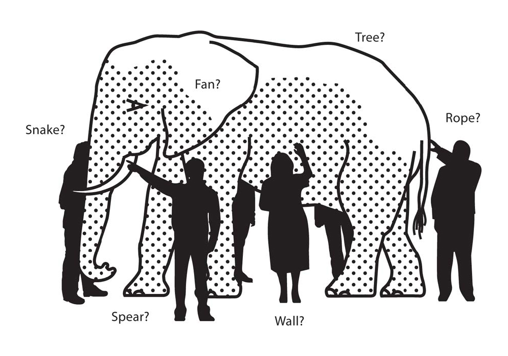
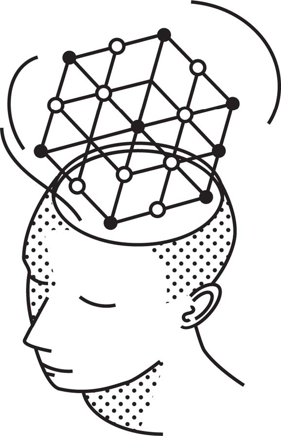

Mental models
The latticework of mental models — a framework for digital leadership
Introduction
Opening quote
In life and business, the person with the fewest blind spots wins. Shane Parrish
The decision-making crisis
In todays world we need to deal with an unprecedented scale of information. 2.5 quintillion bytes daily means our intuitive approaches to processing information are inadequate. Digital leaders need to accompany with VUCA as the “new normal”, which is not a temporary state but the permanent condition of modern leadership.
According to Parrish (2020) information overload, system complexity, and VUCA environments cause significant decision-making challenges in several ways:
- When faced with overwhelming information and complexity, we tend to filter based on our existing biases, potentially missing critical variables that would lead to better decisions (i.e., multiplied blind spots).
- When information exceeds our processing capacity, we tend to rely on simplistic heuristics or familiar models even when they don’t fit the situation rather than the thoughtful application of diverse mental models.
- The parable of the blind men and the elephant becomes even more relevant as in complex systems, each specialist sees only their part of the problem, but no one sees the whole picture.
- In complex systems, the consequences of decisions may be distant in time and space, making it harder to “keep our feet on the ground” and learn from experience (i.e, feedback delay).
- VUCA environments make it particularly difficult to anticipate the “second-, third-, and higher-order consequences of various choices”, which are crucial for decision-making.
The problem with specialization

Just as the blind men each touch a different part of the elephant—perceiving it as a wall, a rope, a fan, a tree, or a spear based on their limited contact—we tend to interpret complex problems solely through our specialized expertise. Whether economists, engineers, physicists, mathematicians, biologists, or chemists, we grasp partial truths about reality while missing the complete picture that would be visible if we combined our perspectives (Parrish, 2020, p. 21).
- Domain expertise creates tunnel vision
- Overuse of familiar tools (“to a hammer, everything looks like a nail”)
- Disciplinary silos limit innovation
Technical expertise alone is insufficient for effective digital leadership. This is why we need mental models from multiple disciplines - they help us see beyond our specialization.
Tetlock & Gardner (2015) emphasize that better decision-making comes not from specialized knowledge alone but from cultivating systematic thought processes that more accurately represent reality. For instance, their expert political judgment studies show specialists make worse predictions than generalists.
This further highlights how developing better mental models isn’t just philosophical—it produces measurably superior outcomes when facing uncertainty.
Latticework thinking
Mental models
Johnson-Laird (1983) shows that humans don’t naturally think using the rules of formal logic (like syllogisms or propositional calculus). Instead, we construct simplified mental representations or “models” of situations and mentally simulate what might happen within those scenarios.
A mental model is a cognitive representation such as a conceptual framework or worldview that helps us understand and interpret the world (Jones et al., 2011).
They function as
- filter for relevant information,
- framework for interpretation (e.g., cause-and-effect dynamics), and
- guide for decision-making.
Mental models can change over time trough learning.
The latticework approach
Worldly wisdom requires models from all important disciplines (Parrish, 2020).
You’ve got to have models in your head. And you’ve got to array your experience—both vicarious and direct—on this latticework of models. American businessman, investor, attorney, and philanthropist; Warren Buffett’s partner at Berkshire Hathaway (1924-2023)

(Parrish, 2020, p. 22)
When findings from different disciplines support the same conclusion, it strengthens the validity of that conclusion. And combining insights across fields can reveal patterns and principles invisible within any single discipline (remember the tale of the elephant).
Example: Netflix uses game theory principles to structure their recommendation algorithms, these create incentive structures for continued engagement, these incentives are implemented through specific UX design patterns, these designs leverage behavioral economics principles like hyperbolic discounting (valuing immediate rewards over future ones)
Mental models x leaders
Introduction
Mental models provide the understanding of how a system works and allow us to use heuristics to quickly navigate within that system.
Mental models are the key to making heuristics fast, frugal and accurate strategies. Such simple mental shortcuts in turn, enable rather then restrict decision-making under uncertainty (Gigerenzer et al., 2022).
Generic mental models
Generic mental models are models that are broadly applicable across multiple domains, disciplines, and situations, rather than being specific to a single field or context.
- First principles
- “Elon Musk attributes Tesla and SpaceX’s innovations to breaking problems down to fundamental truths rather than reasoning by analogy - this is how they reimagined electric vehicles and rocket economics.
- Second-order thinking
- Most people stop at first-order consequences, but digital leaders need to ask ‘And then what?’ repeatedly.
- Probabilistic reasoning
- In environments of uncertainty, thinking in probabilities rather than certainties helps avoid both overconfidence and paralysis.
- Inversion
- Instead of asking ‘How can we make this project succeed?’ also ask ‘What would guarantee this project’s failure?’ - then avoid those conditions.
- Occam’s razor
- When presented with competing explanations or solutions, start with the simplest one with fewest assumptions.
Systems thinking models
Systems thinking models are mental frameworks that help us understand complex systems by focusing on relationships, interactions, and emergent properties rather than isolated components.
- Complex adaptive systems
- Digital ecosystems behave like biological ones — they organize themself without central control or explicit coordination and, thus, can only influenced but not controlled through well-chosen interventions.
- Feedback loops
- Systems are usually coined by reinforcing loops (where A increases B which further increases A) and balancing loops (where changes trigger countervailing forces) - understanding these dynamics helps predict how systems will evolve
- Emergence
- “The most important properties of (digital) systems often aren’t designed but emerge from interactions — like how simple feautures of systems like social networks created entirely new social behaviors (e.g., the hashtag effect).
- Network effects
- Understanding Metcalfe’s Law —that the value of a network grows with the square of the number of users— explains why platforms like LinkedIn or Slack become increasingly valuable and difficult to displace.
Human behavior models
Human behavior models are conceptual frameworks that help explain, predict, and influence how people think, decide, and act. These models are particularly valuable for digital leaders who need to understand both individual psychology and group dynamics when designing systems, implementing change, or leading organizations.
- Incentives
- These models explain how rewards and punishments shape behavior such as the principal-agent problem, intrinsic vs. exdtrinsic motivation and hyperbolic discounting (i.e., the tendendy to overvalue immediate rewards compared to future ones).
- Congnitive bias
- These models explain systematic errors in thinking and decision-making such as confirmation bias, framing effects, and availabiltiy heuristic (i.e., judging probability based on how easily examples come to mind).
- Social and group behavior models
- These models explain how people interact and organize such as status games (competition for position and recognition), reciprocity, and social proof.
Implications
Map vs. territority
The map is not the territory … the only usefulness of a map depends on similarity of structure between the empirical world and the map.1 (Korzybski, 1958).
As all models are wrong, but some are useful:
- Continually test and update models
- Maintain epistemic humility
- Seek disconfirming evidence
- Use multiple maps of the same territory
Built your Latticework
Parrish (2020) recommends to begin with a handful of models from different disciplines rather than many from one field. Quality and diversity trump quantity. In the beginning, focus on mental models with the broadest application - like feedback loops, incentive structures, inversion, and first principles thinking. Read widely, but with purpose. Look for concepts that explain phenomena across multiple domains.
Put an emphasis on application as the key difference between collecting mental models and building a latticework is application. Use the models learned actively in your decision-making and keep a decision journal where you explicitly note which mental models you applied and review outcomes to refine your understanding.
Approach this as a career-long project — the compound interest of mental models accumulates over decades.
Three-step approach:
- Learn (study diverse fields)
- Apply (use models in real decisions)
- Reflect (record outcomes and refine)
Literature
Footnotes
Korzybski developed this concept during a period when many fields were grappling with the limits of human understanding - similar to our current AI era.↩︎